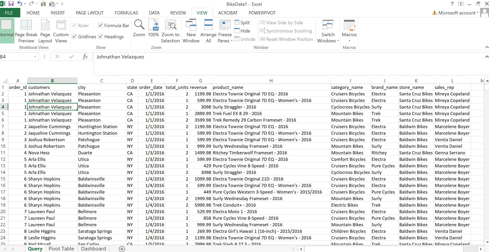

A Passionate Data Analyst
Cleaning Data
using MSSQL
SELECT ord.order_id, CONCAT(cus.first_name, ' ', cus.last_name) AS customers, cus.city, cus.state, ord.order_date, SUM(ite.quantity) AS total_units, SUM(ite.quantity * ite.list_price) AS revenue, pro.product_name, cat.category_name, bra.brand_name, sto.store_name, CONCAT(sta.first_name, ' ', sta.last_name) AS sales_rep FROM sales.orders ord JOIN sales.customers cus ON ord.customer_id = cus.customer_id JOIN sales.order_items ite ON ord.order_id = ite.order_id JOIN production.products pro ON ite.product_id = pro.product_id JOIN production.categories cat ON pro.category_id = cat.category_id JOIN production.brands bra ON pro.brand_id = bra.brand_id JOIN sales.stores sto ON ord.store_id = sto.store_id JOIN sales.staffs sta ON ord.staff_id = sta.staff_id GROUP BY ord.order_id, CONCAT(cus.first_name, ' ', cus.last_name), cus.city, cus.state, ord.order_date, pro.product_name, cat.category_name, bra.brand_name, sto.store_name, CONCAT(sta.first_name, ' ', sta.last_name)
This is the code used on MSSQL to retrieve data from the tables in the created Database "BikeStores". Once retrieved, the data was uploaded into Excel to ensure it was clean.
{kind=link}
A Screenshot of the Data in Excel
Canada COVID-19 Tracker

The first step in creating a beautiful dashboard is to use charts and graphs to visualize data in a way that is easy to understand. In addition to using charts and graphs to visualize data, I also created sets, calc. fields, and parameters to filter and manipulate data.
By creating sets, calc. fields, and parameters, I was able to give users more control over how they viewed the data in my dashboard. This allows them to explore the data in different ways and to see different perspectives. I also used the mechanics of sheet swapping to create dynamic dashboards that can be updated with new data. Sheet swapping allows you to create multiple versions of a dashboard and to swap between them as needed.
Finally, I designed an interactive dashboard that allows users to explore and analyze data in a meaningful way. The dashboard is easy to use and navigate, and it provides users with a variety of tools to explore the data. For example, users can filter the data, sort the data, and create custom charts and graphs.
The Bike Stores
Project
I started by writing a script that would generate a data set with fields consistent of the order ID, the Customer city and state, the order date, sales volume, revenue product name, product category, brand name, store name and sales rep. This data set would be the foundation of my dashboard.
Once I had the data set, I started to create the dashboard. I used a variety of charts and graphs to visualize the data. I wanted to make sure that the dashboard was easy to understand and that it would provide insights into the various trends happening in the sales volume over the 2016 to 2018 period.
HR Analytics
Project
Excited to reveal some newly found skills in Tableau. Here we are to the "HR Analytics Dashboard". This dashboard was fun but also challenging. Through this dashboard, an HR department would be able to determine the attrition difference between genders and also age groups. For example, the dashboard could show that women are more likely to leave the company than men, or that employees in their 20s are more likely to leave than employees in their 30s. This information could help the HR department to develop targeted retention strategies.
The dashboard also includes visualizations that show the average employee tenure by department, the most common reasons for leaving the company. This information could help the HR department to identify areas for improvement in the workplace, such as providing better training or increasing compensation.
Overall, the HR Analytics Dashboard is a valuable tool that can help HR departments to make data-driven decisions about employee retention and workplace improvement.